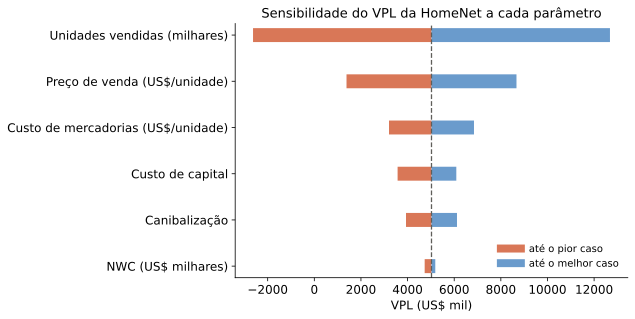

| Ano 0 | Ano 1 | Ano 2 | Ano 3 | Ano 4 | Ano 5 | |
|---|---|---|---|---|---|---|
| Despesas operacionais | -50 | — | — | — | — | — |
| Depreciação (equip. novo) | — | -204 | -204 | -204 | -204 | -204 |
Dado o modelo certo de decisão — o VPL — de onde vêm os fluxos de caixa que entram nele?
Principais elementos a estimar, e sua estrutura no tempo:
Desembolso inicial
Fluxos contínuos
Fluxos terminais
Fonte: estrutura de Berk & DeMarzo (BDM1).
Alerta: é preciso distinguir conceitos contábeis de conceitos econômicos.
Ambos são saída de recursos em \(t=0\). A distinção contábil importa porque influencia os impostos a pagar.
| Ano 0 | Ano 1 | Ano 2 | Ano 3 | Ano 4 | Ano 5 | |
|---|---|---|---|---|---|---|
| Despesas operacionais | -50 | — | — | — | — | — |
| Depreciação (equip. novo) | — | -204 | -204 | -204 | -204 | -204 |
Valores em US$ mil. O gasto operacional de US$ 50 mil entra todo em \(t=0\); o desembolso de capital de US$ 1,02 milhão vira depreciação de US$ 204 mil/ano por 5 anos. (O contrato com a Apple — e seus custos de produção — ainda não entrou na análise; vem no próximo slide.)
| Ano 0 | Ano 1 | Ano 2 | Ano 3 | Ano 4 | Ano 5 | |
|---|---|---|---|---|---|---|
| Receita incremental | — | 500 | 500 | 500 | 500 | 500 |
| Custo incremental | -50 | -150 | -150 | -150 | -150 | -150 |
\[ \text{EBIT} = \text{Receita Incremental} - \text{Custos Incrementais} - \text{Depreciação} \]
\[ \text{Impostos} = \text{Alíquota Marginal} \times \text{EBIT} \]
\[ \text{Result. Incremental Líquido} = \text{EBIT} - \text{Impostos} \]
| Ano 0 | Ano 1 | Ano 2 | Ano 3 | Ano 4 | Ano 5 | |
|---|---|---|---|---|---|---|
| Receita incremental | — | 500 | 500 | 500 | 500 | 500 |
| Custo incremental | -50 | -150 | -150 | -150 | -150 | -150 |
| Depreciação | — | -204 | -204 | -204 | -204 | -204 |
| EBIT | -50 | 146 | 146 | 146 | 146 | 146 |
| Imposto de renda a 40% | 20,0 | -58,4 | -58,4 | -58,4 | -58,4 | -58,4 |
| Lucro incremental | -30,0 | 87,6 | 87,6 | 87,6 | 87,6 | 87,6 |
Não-alavancado? Esta é uma separação deliberada entre financiamento e investimento — mais tarde estudaremos alternativas e o papel do financiamento.
| Ano 0 | Ano 1 | Ano 2 | Ano 3 | Ano 4 | Ano 5 | |
|---|---|---|---|---|---|---|
| Vendas | — | 26.000 | 26.000 | 26.000 | 26.000 | — |
| Custo de mercadorias vendidas | — | -11.000 | -11.000 | -11.000 | -11.000 | — |
| Lucro bruto | — | 15.000 | 15.000 | 15.000 | 15.000 | — |
| Desp. vendas, gerais e adm. | — | -2.800 | -2.800 | -2.800 | -2.800 | — |
| Pesquisa e desenvolvimento | -15.000 | — | — | — | — | — |
| Depreciação | — | -1.500 | -1.500 | -1.500 | -1.500 | -1.500 |
| EBIT | -15.000 | 10.700 | 10.700 | 10.700 | 10.700 | -1.500 |
| Imposto de renda a 40% | 6.000 | -4.280 | -4.280 | -4.280 | -4.280 | 600 |
| Lucro líquido não-alavancado | -9.000 | 6.420 | 6.420 | 6.420 | 6.420 | -900 |
Fonte: Berk & DeMarzo, Tabela 7.1.
| Ano 0 | Ano 1 | Ano 2 | Ano 3 | Ano 4 | Ano 5 | |
|---|---|---|---|---|---|---|
| Vendas | — | 23.500 | 23.500 | 23.500 | 23.500 | — |
| Custo de mercadorias vendidas | — | -9.500 | -9.500 | -9.500 | -9.500 | — |
| Lucro bruto | — | 14.000 | 14.000 | 14.000 | 14.000 | — |
| Desp. vendas, gerais e adm. | — | -3.000 | -3.000 | -3.000 | -3.000 | — |
| Pesquisa e desenvolvimento | -15.000 | — | — | — | — | — |
| Depreciação | — | -1.500 | -1.500 | -1.500 | -1.500 | -1.500 |
| EBIT | -15.000 | 9.500 | 9.500 | 9.500 | 9.500 | -1.500 |
| Imposto de renda a 40% | 6.000 | -3.800 | -3.800 | -3.800 | -3.800 | 600 |
| Lucro líquido não-alavancado | -9.000 | 5.700 | 5.700 | 5.700 | 5.700 | -900 |
Fonte: Berk & DeMarzo, Tabela 7.2 (incluindo canibalização e aluguel perdido).
Em ambas, não esquecer de subtrair o dispêndio de capital em \(t=0\).
| Ano 0 | Ano 1 | Ano 2 | Ano 3 | Ano 4 | Ano 5 | |
|---|---|---|---|---|---|---|
| Lucro líquido não-alavancado | -9.000 | 5.700 | 5.700 | 5.700 | 5.700 | -900 |
| Mais: depreciação | — | 1.500 | 1.500 | 1.500 | 1.500 | 1.500 |
| Menos: dispêndios de capital | -7.500 | — | — | — | — | — |
| Menos: aumentos em NWC | — | -2.100 | — | — | — | 2.100 |
| Fluxo de caixa livre | -16.500 | 5.100 | 7.200 | 7.200 | 7.200 | 2.700 |
Fonte: Berk & DeMarzo, Tabela 7.3.
\[ NWC = \text{Ativo circulante} - \text{Passivo circulante} \]
\[ NWC = \text{Caixa} + \text{Estoques} + \underbrace{\text{C. a receber} - \text{C. a pagar}}_{\text{crédito comercial}} \]
Nota: aqui definimos \(\Delta NWC_t = \Delta\text{Estoques}_t + \Delta\text{C. a receber}_t - \Delta\text{C. a pagar}_t\) (ignoramos caixa, para ter como contrapartida a variação que seria induzida no caixa).
| Ano 0 | Ano 1 | Ano 2 | Ano 3 | |
|---|---|---|---|---|
| Nível de NWC incremental | 20.000 | 20.000 | 20.000 | — |
| Variação no NWC incremental | +20.000 | — | — | -20.000 |
| Fluxo de caixa da variação | -20.000 | — | — | +20.000 |
Um aumento no NWC é uma saída de caixa; uma queda é uma entrada.
Suponha que a HomeNet não tenha necessidade incremental de caixa ou estoque (produtos são enviados diretamente do fabricante contratado aos clientes). Porém, os recebíveis ligados à HomeNet devem corresponder a 15% das vendas anuais, e os pagáveis a 15% do custo de mercadorias vendidas (CMV) anual. 15% de US$ 13 milhões em vendas são US$ 1,95 milhão; 15% de US$ 5,5 milhões em CMV são US$ 825 mil.
| Ano 0 | Ano 1 | Ano 2 | Ano 3 | Ano 4 | Ano 5 | |
|---|---|---|---|---|---|---|
| Recebíveis (15% das vendas) | — | 1.950 | 1.950 | 1.950 | 1.950 | — |
| Pagáveis (15% do CMV) | — | -825 | -825 | -825 | -825 | — |
| Capital de giro líquido | — | 1.125 | 1.125 | 1.125 | 1.125 | — |
Como essa exigência afeta o fluxo de caixa livre do projeto?
| Ano 0 | Ano 1 | Ano 2 | Ano 3 | Ano 4 | Ano 5 | |
|---|---|---|---|---|---|---|
| Receitas | — | 13.000 | 13.000 | 13.000 | 13.000 | — |
| CMV | — | -5.500 | -5.500 | -5.500 | -5.500 | — |
| Lucro bruto | — | 7.500 | 7.500 | 7.500 | 7.500 | — |
| Desp. vendas, gerais e adm. | — | -2.800 | -2.800 | -2.800 | -2.800 | — |
| Depreciação | — | -1.500 | -1.500 | -1.500 | -1.500 | -1.500 |
| EBIT | — | 3.200 | 3.200 | 3.200 | 3.200 | -1.500 |
| Imposto de renda a 40% | — | -1.280 | -1.280 | -1.280 | -1.280 | 600 |
| Lucro incremental | — | 1.920 | 1.920 | 1.920 | 1.920 | -900 |
| Mais: depreciação | — | 1.500 | 1.500 | 1.500 | 1.500 | 1.500 |
| Compra de equipamento | -7.500 | — | — | — | — | — |
| Menos: variação no NWC | — | -1.125 | — | — | — | 1.125 |
| Fluxo de caixa livre | -7.500 | 2.295 | 3.420 | 3.420 | 3.420 | 1.725 |
Exemplo autocontido, à parte da HomeNet com canibalização: ilustra apenas a definição de NWC via recebíveis/pagáveis.
\[ \begin{aligned} FCF &= (\text{Receitas} - \text{Custos} - \text{Depr.}) \cdot (1-\tau) \\ &\quad + \text{Depr.} - \text{DespCap} - \Delta\text{Cap.Giro} \\ &= (\text{Receitas} - \text{Custos})\cdot(1-\tau) + \tau\cdot\text{Depr.} \\ &\quad - \text{DespCap} - \Delta\text{Cap.Giro} \end{aligned} \]
Dado o fluxo \(\{FCF_t\}_{t=0}^T\), descontamos normalmente pelo custo de capital relevante (detalhado mais adiante no curso).
\[ \text{Valor Contábil} = \text{Valor de Aquisição} - \text{Depreciação Acumulada} \]
\[ \text{Ganho de Capital} = \text{Valor de Venda} - \text{Valor Contábil} \]
\[ \text{FC Venda} = \text{Valor de Venda} - \tau \cdot \text{Ganho de Capital} \]
Você decide se substitui uma máquina da linha de produção. A nova máquina custa US$ 1 milhão, mas é mais eficiente, reduzindo custos em US$ 500.000/ano. A máquina antiga está totalmente depreciada, mas você poderia vendê-la por US$ 50.000. A nova máquina seria depreciada em 5 anos pelo MACRS. Ela não muda as necessidades de capital de giro. A alíquota é 35%, e o custo de capital é 9%. Substituir a máquina?
| Ano 0 | Ano 1 | Ano 2 | Ano 3 | Ano 4 | Ano 5 | |
|---|---|---|---|---|---|---|
| Taxa de depreciação (MACRS) | 20,00% | 32,00% | 19,20% | 11,52% | 11,52% | 5,76% |
| Depreciação | 200.000 | 320.000 | 192.000 | 115.200 | 115.200 | 57.600 |
Valores em US$ (não em milhares) — a máquina custa US$ 1 milhão.
\[ \text{Ganho de capital} = 50.000 - 0 = 50.000 \]
\[ \text{FC de venda do ativo antigo} = 50.000 - (50.000)(0{,}35) = 32.500 \]
| Ano 0 | Ano 1 | Ano 2 | Ano 3 | Ano 4 | Ano 5 | |
|---|---|---|---|---|---|---|
| Redução de custos | — | 500 | 500 | 500 | 500 | 500 |
| Lucro bruto incremental | — | 500 | 500 | 500 | 500 | 500 |
| Depreciação | -200,0 | -320,0 | -192,0 | -115,2 | -115,2 | -57,6 |
| EBIT | -200,0 | 180,0 | 308,0 | 384,8 | 384,8 | 442,4 |
| Imposto de renda a 35% | 70,00 | -63,00 | -107,80 | -134,68 | -134,68 | -154,84 |
| Lucro incremental | -130,00 | 117,00 | 200,20 | 250,12 | 250,12 | 287,56 |
| Mais: depreciação | 200,0 | 320,0 | 192,0 | 115,2 | 115,2 | 57,6 |
| Compra de equipamento | -1.000 | — | — | — | — | — |
| FC de venda do ativo antigo | 32,5 | — | — | — | — | — |
| Fluxo de caixa livre | -897,50 | 437,00 | 392,20 | 365,32 | 365,32 | 345,16 |
Valores em US$ mil (diferente da tabela anterior, que está em US$ inteiros).
\[ VPL = -897{,}50 + \frac{437{,}00}{1{,}09} + \frac{392{,}20}{1{,}09^2} + \frac{365{,}32}{1{,}09^3} + \frac{365{,}32}{1{,}09^4} + \frac{345{,}16}{1{,}09^5} = 598{,}75 \]
VPL positivo: substituir a máquina.
| Parâmetro | Suposição inicial | Pior caso | Melhor caso |
|---|---|---|---|
| Unidades vendidas (milhares) | 100 | 70 | 130 |
| Preço de venda (US$/unidade) | 260 | 240 | 280 |
| Custo de mercadorias (US$/unidade) | 110 | 120 | 100 |
| NWC (US$ milhares) | 2.100 | 3.000 | 1.600 |
| Canibalização | 25% | 40% | 10% |
| Custo de capital | 12% | 15% | 10% |
Fonte: Berk & DeMarzo, Tabela 7.9.

VPL recalculado a partir do modelo das Tabelas 7.1–7.3 (mesmas premissas-base da Tabela 7.9); o VPL de caso-base recalculado é 5026 mil, próximo dos US$ 5.027 mil da Tabela 7.10. Pequenas diferenças de arredondamento em relação à Figura 7.2 original do livro são esperadas.
| Parâmetro | Ponto de equilíbrio |
|---|---|
| Unidades vendidas (por ano) | 79.759 unidades/ano |
| Preço no atacado (US$/unidade) | US$ 232/unidade |
| Custo de mercadorias (US$/unidade) | US$ 138/unidade |
| Custo de capital | 24,1% |
Break even em VPL de FCF vs. EBIT: o valor do parâmetro que zera o VPL do projeto.
Fonte: Berk & DeMarzo, Tabela 7.8.
| Estratégia | Preço de venda | Unidades vendidas | VPL |
|---|---|---|---|
| Estratégia atual | US$ 260 | 100 mil | US$ 5.027 mil |
| Redução de preço | US$ 245 | 110 mil | US$ 4.582 mil |
| Aumento de preço | US$ 275 | 90 mil | US$ 4.937 mil |
Cenários alternativos de precificação — cada um muda preço e volume esperado simultaneamente.
Fonte: Berk & DeMarzo, Tabela 7.10.